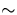
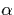
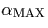
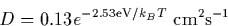

| Source | Si-O length (Å) | Si-O-Si angle | LVMs (cm-1) |
| Experimental | |||
|---|---|---|---|
| Bosomworth and Newman[77,109] | 164 | 1136, 518 | |
| Theoretical | |||
| Previous AIMPRO[110,111,94] | 1.59 | 172 | 1104, 554 |
| Snyder et al[112] | 1.61 | 180 | 1275, 699 |
| Estreicher[113] | 1.57 | 164 | |
| Oshiyama et al[93] | 1.68 | 152 | 1187 |
| Kelly[114] | 1.77 | 140 | |
| Needels et al[115] | 1.64 | 140 | |
| Artacho et al[116] | 1.56 | 180 | 1150, 517 |
| Disiloxane [50,117,118] | 1.634 | 144.1 | 1107, 606 |
Thus general consensus puts the Si-O bond length at 1.6 Å, similar to that in -quartz at 1.60-1.61 Å[119]. There is also remarkable consistency with the properties of smaller Si-O molecules. The smallest of these is disiloxane, (SiH3)-O-(SiH3), which has a Si-O bond length of 1.634 Å, Si-O-Si bond angle of 144.1 and vibrational modes at 1107 and 606 cm-1 [50,117,118]. This `scalability' from small molecular systems to the Si bulk provides indirect support to the cluster method which similarly assumes that a large molecular cluster is a reasonable physical approximation to the bulk.
The variation in bond angle is due to the potential surface perpendicular to the Si-Si bond which appears to be fairly flat providing the bond lengths are kept approximately constant. Bosomworth et al. estimated this angle by fitting overtones of the 29.3 cm-1 bend mode to a simple potential for which they deduced a Si-O-Si angle to be 164, supposing a Si-O length of 1.6 Å[77].
The symmetric and asymmetric stretch modes are well reproduced by most calculations (see Table 6.1). Previous AIMPRO calculations gave isotopic shifts in good agreement with experiment [94]. The 1136 cm-1 mode is an assymetric O-Si stretch mode. The 518 cm-1 mode is a symmetric O-Si stretch, where both Si atoms move symmetrically along the bond while the O atom remains fixed (hence the mode does not shift when the O isotope is changed). There is also a low frequency 29 cm-1 bend mode. These modes, along with the AIMPRO calculated values are given in Table 6.3. The primary 1136 cm-1 absorption peak has been callibrated to the Oi concentration (ASTM procedure F121-83) [120]
Where I is the integrated absorption coefficient of the band and  is the peak absorption coefficient. The value of 3.14 replaced an earlier calibration coefficient of 2.45 in 1989, and so any work based on these calibrations before that time should be treated with caution.
Oi diffuses by hopping between bond centred sites. In order to achieve this it has to break one of its current Si-O bonds, move to some intermediate state often referred to as a `y-lid' [121] (since in principal the O atom has three bonds), and then push its way into the next Si-Si bond. The diffusion constant for this motion has been determined by several groups, and Mikkelsen [4] fitted data from six independent experiments, leading to a diffusion constant for this motion of

This is valid over a wide temperature range, from 300-1200C. Stress induced dichroism experiments show this barrier at temperatures around 380C [106,122,123]. Secondary ion mass spectrometry (SIMS) measurements [4,124] also lead to the same activation energy for the oxygen diffusivity at temperatures above 700C, while small angle scattering measurements on the growth of small oxygen precipitates show that the precipitation is controlled by oxygen diffusion at temperatures above 650C [125].
Below this temperature, the process is sufficiently slow to become unusable. An important question is whether long range oxygen diffusion and the growth of oxygen precipitates at temperatures below 400C is controlled by the same process. It is known that some impurities (such as hydrogen) can increase the low temperature hop rate [126,127] and reduce its activation energy to about 1.6 eV [113,128]. This then increases the rate of oxygen precipitation as the thermal donor production rate also increases. It has also been proposed that pairs of oxygen atoms may be able to diffuse faster than Oi, and this is discussed further below.
Various theoretical groups have attempted to model Oi diffusion, and the results are summarised in Table 6.2. Apart from Jiang and Brown[129] they all obtained a saddle point midway between the two bond centre sites, either as an implicit assumption in the calculations, or determined by mapping out the potential energy surface [110,130]. There are large differences between the calculations, which may be because the potential energy near the saddle point is rather flat.
Needels et al., [115] suggested the adiabatic saddle point is 0.7 eV lower than the experimental one. They argued that although an O atom provided with about 1.8 eV of kinetic energy moves close to the saddle point, it fails to open up the attacked Si-Si bond and returns to its starting point. They suggested that the O atom must develop kinetic energy of above 2.3 eV to avoid this return. More recent work by Ramamoorthy and Pantelides [130] developed this idea and suggested that the total barrier is a mixture of two independent barriers, namely that required to break and reform the relevant Si-O bonds, and a second barrier to break and reform the other two Si-Si bonds. These two barriers together give a potential surface crossed by a `saddle ridge', the average height of which is around 2.5 eV.
| Author | Calculation / Measurement | Barrier (eV) |
| Experimental | ||
|---|---|---|
| Mikkelsen [4] | Best-Fit to various data | 2.53 |
| Mikkelsen et al [131,106,132] | 2.56 | |
| Stavola et al [133,122] | 2.54 | |
| Bosomworth and Newman [77,109] | 2.5 | |
| Theoretical | ||
| Jones et al [110] | Previous AIMPRO | 2.8 |
| Jiang and Brown [129] | Empirical fit potential | 2.43 |
| Needels et al. [115] | local DFT supercell | 1.8 |
| Oshiyama and Saito | local DFT supercell [134] | 2.0 |
| Cluster calculation [93] | 1.2 | |
| Estreicher [113] | PRDDO | 4.1 |
| Kelly [114] | s-c Greens Function | 2.5 |
| Snyder and Corbett [121], Kelly [135] | s-c CNDO / MINDO3 | 2.3 - 2.5 |
| Ramamoorthy and Pantelides [130,136] | DFT supercell | 2.5 |